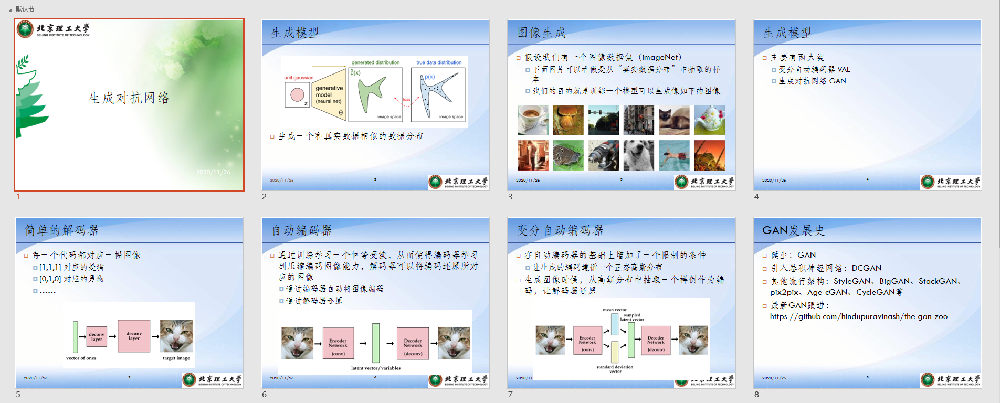

笔记
详见GAN.pptx


诞生：GAN，Goodfellow，2014
引入卷积神经网络：DCGAN，2015-2016
其他流行架构：cGAN、StyleGAN、BigGAN、StackGAN、pix2pix、Age-cGAN、CycleGAN等
最新GAN跟进：https://github.com/hindupuravinash/the-gan-zoo
VAE: Auto-Encoding Variational Bayes
GAN : Generative Adversarial Networks
DCGAN : Unsupervised Representation Learning with Deep Convolutional Generative Adversarial Networks
cGAN : Conditional Generative Adversarial Nets
StyleGAN : A Style-Based Generator Architecture for Generative Adversarial Network
BigGAN : Large Scale GAN Training for High Fidelity Natural Image Synthesis
StackGAN : StackGAN: Text to Photo-Realistic Image Synthesis with Stacked Generative Adversarial Networks
Pix2pix : Image-to-Image Translation with Conditional Adversarial Networks
Age-cGAN : Age Conditional Generative Adversarial Networks
CycleGAN : Unpaired Image-to-Image Translation using Cycle-Consistent Adversarial Networks
The GAN Zoo : Latest GANs updating
WGAN :改造loss function
WGAN-GP:中大正在实现，遇到问题
VAE
传统生成器，包含理论证明
用L1和L2 loss重建的图像很模糊，也就是说L1和L2并不能很好的恢复图像的高频部分(图像中的边缘等)，但能较好地恢复图像的低频部分(图像中的色块)。
输入为groudtruth，不是random latent vector
GAN
让generator和discriminator相互竞争（或合作，这是一个观点问题）。一个神经网络试图生成接近真实的数据（注意，GANs 可以用来模拟任何数据分布，但目前主要用于图像），另一个网络试图区分真实的数据和由生成网络生成的数据。
重点阅读，包含理论证明，收敛性等

DCGAN
改进了模型的网络结构，设定了一些限制条件，工程上改进，使得训练更加稳定：
- 用fractionally-strided convolutions代替pooling layer
- 引入B.N.，except output of G & input of D
- Remove fully-connected layer, except first layer of G
- In G, use tanh in output layer (saturate quicker) and ReLU in other layers
- In D, use LeakyReLU in all layers
- 训练两次G & 一次D,make sure that d_loss does not go to zero
更新D的时候不会更新G的参数，虽然是两个网络级联，但实际工程上，是分成两个网络，G输出是可以看成一个numpy变量输入到discriminator，并不是带参数的函数f(z)
重点阅读，官方实现，针对MNIST,给了cGAN实现

BigGAN
谷歌的实习生和谷歌DeepMind部门的两名研究人员发表, 这是GAN首次生成具有高保真度和低品种差距的图像。它最重要的改进是对生成器的正交正则化。
StyleGAN
NVIDIA发布，已迭代至StyleGAN2.
StyleGAN在面部生成任务中创造了新记录。算法的核心是风格转移技术或风格混合。除了生成面部外，它还可以生成高质量的汽车，卧室等图像。这是GANs领域的另一项重大改进，也是深度学习研究人员的灵感来源。
FFHQ (Flickr-Faces-HQ) : 包含 7W 张1024*1024高清人脸照
StyleGAN，提出了一个新的 generator architecture，能够控制所生成图像的高层级属性(high-level attributes)，如 发型、雀斑等
笔记：
- coarse spatial resolution：输出是4，8的G的模块，middle是16-32，fine style是64-1024
- A：affine transform，学习了两个变换，对同一输入，分别生成ys和yb，有待根据代码确认
- adaptive instance normalization，使用ys和yb
- style mixing，不同的resolution输入的style来自不同的latent vector
- usage of noise，应用在fine resolution使图像更真实
- loss function

StackGAN
使用StackGAN来探索文本到图像的合成，得到了非常好的结果。一个StackGAN由一对网络组成，当提供文本描述时，可以生成逼真的图像。
Mainly for bird and flower
- CUB Dataset forbird
Caltech-UCSD Birds-200-2011 (CUB-200-2011) 是 CUB-200 dataset 的一个扩充版本，每个类的图像数量大约增加两倍和新的部位注释。（1）类别数目: 200
（2）图像总数目: 11,788
（3）每张图片的标注信息: 15 Part Locations, 312 Binary Attributes, 1 Bounding Box - Oxford-102 dataset for flower
数据集由102类产自英国的花卉组成。每类由40-258张图片组成。 - MS COCO for other images
工程实现过程：
- 相比GAN，1、引入CA，2、再往后叠加了stage2，即两个GAN
- G的输入text descriptor通过1.deep convolutional and recurrent text encoders[Learning deep representations for fine-grained visual descriptors]将image转化为text，然后2.通过word2vec转化为向量
- Conditioning augmentation的实际工程实现，1.假设c为100维，则CA即为连接200D的dense layer，前100维为mean，后100维为std，则经CA后的输出c为mean+epsilon*exp（std）；2.CA过程产生的loss也被叠加在generator loss上

pix2pix
其实可以看成是有监督的，因为输入的是轮廓，可以看成是对应图像的label
对于图像到图像的翻译任务，pix2pix也显示出了令人印象深刻的结果。无论是将夜间图像转换为白天的图像还是给黑白图像着色，或者将草图转换为逼真的照片等等，Pix2pix在这些例子中都表现非常出色。
GAN其实是一种相对于L1 loss更好的判别准则或者loss。有时候单独使用GAN loss效果好，有时候与L1 loss配合起来效果好。在pix2pix中，作者就是把L1 loss 和GAN loss相结合使用，因为L1 loss 可以恢复图像的低频部分，而GAN loss可以恢复图像的高频部分。
缺点：使用这样的结构其实学到的是x到y之间的一对一映射！也就说，pix2pix就是对ground truth的重建：输入轮廓图→经过Unet编码解码成对应的向量→解码成真实图。例如，当我们输入训练集中不存在的轮廓图时，重建效果不ok
- generator: Unet
- discriminitor: proposed patchGAN, 把图像等分成patch，分别判断每个Patch的真假，最后再取平均！作者最后说，文章提出的这个PatchGAN可以看成所以另一种形式的纹理损失或样式损失。在具体实验时，不同尺寸的patch，最后发现70x70的尺寸比较合适。
- 对比有无L1 loss时生成图像的区别
CycleGAN，2017
CycleGAN有一些非常有趣的用例，例如将照片转换为绘画，将夏季拍摄的照片转换为冬季拍摄的照片，或将马的照片转换为斑马照片，或者相反。CycleGAN用于不同的图像到图像翻译。
pix2pix是paired，cyclegan是unpaired
input is not random latent vector
instance normalization & patchGAN
四个loss function


cGAN
紧随着原生GAN出现的。在这篇文章中，作者在输入的时候加入了条件（类别标签或者其他模态的信息），比如在MNIST训练好的网络，可以指定生成某一个具体数字的图像，这就成了有监督的GAN。同时，在文章中，作者还使用网络进行了图像自动标注。
例如MNIST，input vector=[random latent vector] + [class label vector]
在原生GAN中，判别器的输入是训练样本x，生成器的的输入是噪声z，在conditional GAN中，生成器和判别器的输入都多了一个y，这个y就是那个条件。以手写字符数据集MNIST为例，这时候x代表图片向量，y代表图片类别对应的label(one-hot表示的0~9)。

Age-cGAN
面部老化有许多行业用例，包括跨年龄人脸识别，寻找失踪儿童，或者用于娱乐。论文中提出了用条件GAN进行面部老化。
基于latent vector&generator&discriminator的变形，多次的实验尝试，找到最佳结构，给予网络结构的为何能实现指定应用的合理解释
- condition is a vector represent age
- modify to generator